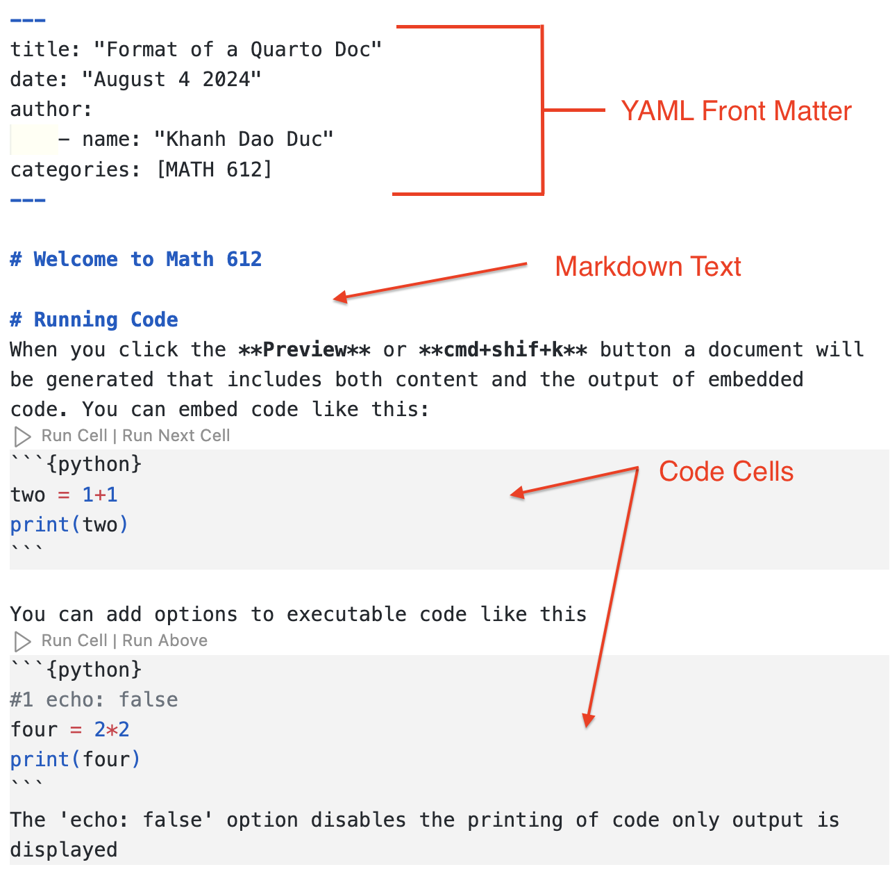

Preliminaries
- Jupyter: Use Jupyter Notebooks for interactive coding and documentation. Great for running small code snippets and visualizing data. Learn more in the Jupyter Notebook Documentation.
- VS Code: A powerful IDE for writing and debugging code. Download it here, and install relevant extensions for Python and LaTeX.
- Environments: Use virtual environments like venv or conda to manage dependencies and ensure consistent results across different setups.
- Quarto: Use Quarto for creating high-quality documents, reports, and presentations from your code. It supports markdown and integrates seamlessly with Jupyter and VS Code for reproducible analysis and publication. Check out the Quarto Guide for more information. To get started quickly, you can refer to this GitHub Repository.
Using GitHub
- Create a GitHub Account: Sign up at GitHub.com.
- Repositories: Start by creating a repository to host your project files. Learn how in GitHub’s guide to repositories. Use a
.gitignorefile to exclude unnecessary files. - Branches: Work on separate branches (
main,dev, feature branches) to manage different versions of your project. More details in GitHub’s guide on branching. - Merges: Merge changes into the
mainbranch only after thorough review and testing. Learn about merging branches. - Commit Messages: Write clear, descriptive commit messages to document changes effectively. Follow the best practices for commit messages.
Using Quarto to create blog posts
Log into GitHub: Make sure you have an account and are logged in.
Send your account username/email to kdd@math.ubc.ca: This is needed to be added to the organization.
Clone the repository: After being added to the organization, clone the repository:
https://github.com/bioshape-analysis/blog.git clone https://github.com/bioshape-analysis/blogCreate a new branch: To contribute to the blog, create a new branch using:
git checkout -b <branch_name>Verify your branch and repository location: Use the following command to check if you are in the correct branch and repository:
git statusThis command will show you the current branch you are on and the status of your working directory, ensuring you are working in the right place
Navigate to
posts: Go into thepostsdirectory (found here). Create a new folder with a name that represents the content of your blog post.Create or upload your content:
If using Jupyter Notebooks, upload your
.ipynbfile.If preferred, create a new notebook for your post. Once done, convert it into Quarto using the command:
quarto convert your_jupyter_notebook.ipynb -o output_file.qmd
Edit the YAML in your
.qmdfile: Ensure your YAML is consistent with the main template. For example:
---
title: "Title of your blog post"
date: "Date" # Format example: August 9 2024
author:
- name: "Your Name"
jupyter: python3
categories: [] # [biology, bioinformatics, theory, etc.]
bibliography: references.bib # If referencing anything
execute:
freeze: auto
---Feel free to add further formatting, but ensure it remains consistent with the main template. 8. Delete your Jupyter notebook: After converting it to a .qmd file, delete the original .ipynb file to prevent duplication in the blog post. 9. Commit and push your changes: After completing your .qmd file, push your branch to GitHub. A pull request will be automatically created, and once reviewed, it will be merged into the main branch.
Anatomy of a Quarto Document:  If you are running code, please do not forget the execute: freeze: auto, so that the website can be built without re-running your code each time.
Additional Information for Quarto:
Add Images: You can add images to your Quarto document using markdown syntax:
To add images from a URL:
Add References: Manage references by creating a
bibliography.bibfile with your references in BibTeX format. Link the bibliography file in your Quarto document header (YAML). Cite references in your text using the following syntax:This is a citation [@citation_key].Other Edits: Add headers, footnotes, and other markdown features as needed. Customize the layout by editing the YAML header.
Multiple environments in the same Quarto project
In your blog post, you may want to use specific python packages, which may conflict with packages used in other post. To avoid this problem, you need to use a virtual environment. For simplicity please name your environment .venv.
Creating the virtual environment: Go to your post folder (e.g
blog/posts/my_post) and run :python -m venv .venvThe folder
.venvwas created and contains the environment.Installing packages: First activate the environment,
source .venv/bin/activateand then install the packages you need:
pip install package1_name package2_nameTo run code in Quarto, you need at least the package
jupyter. Deactivate the environment withdeactivate.Using environment in VS Code: Link the virtual environment to VS Code using the command palette, with the command
Python : Select Interpreterand entering the path to your interpreter ending with.venv/bin/python.Export your package requirements If you are installed non standard package, other that
jupyter,numpy,matplotlib,pandas,plotlyfor example, you can export your package requirements, so that other can reproduce your environment. First go to your post directory and activate your environment. Then run:pip freeze > requirements.txt